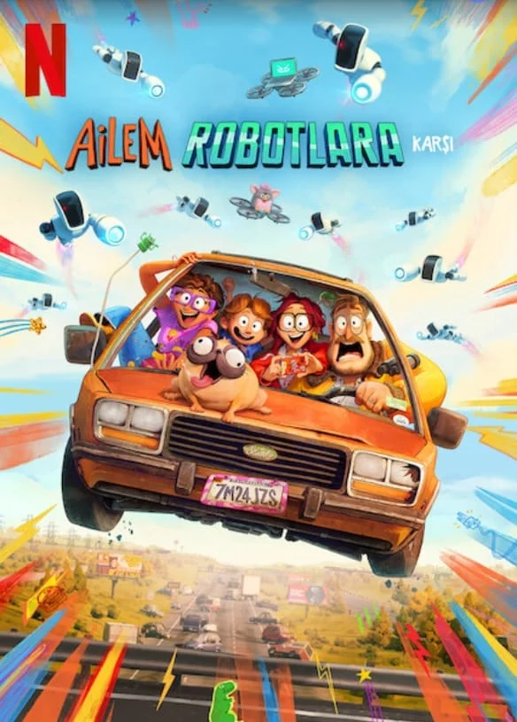
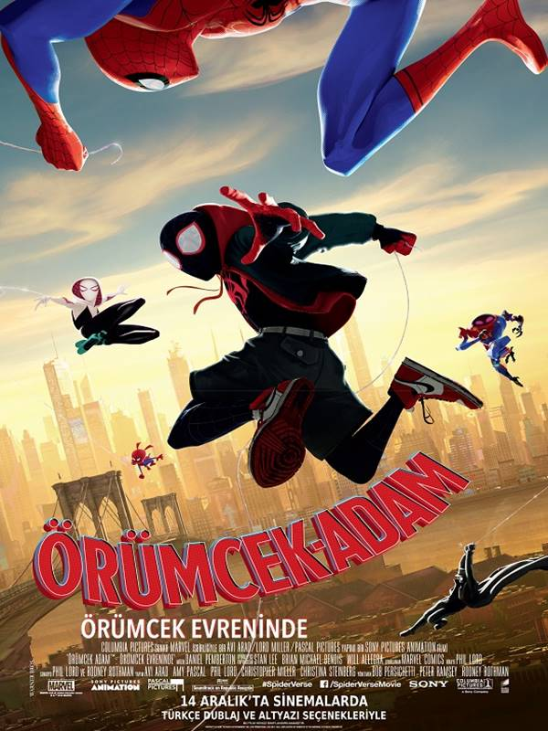

-

COCO
Coco, 12 yaşındaki Miguel'in ölüler diyarındaki macerasını anlatıyor. 12 yaşındaki Miguel'in en büyük kahramanı efsanevi Meksikalı gitarist Ernesto de la Cruz'dur. Ancak Cruz hayatını kaybetmiştir ve Miguel'in onunla tanışma imkanı yoktur. Her gün onun şarkılarını dinleyen Miguel günün birinde ünlü müzisyenin gitarını bulur. Ancak gitarı çalması onu bir anda Ölüler Diyarı'na götürüverir. Çıkış yolunu arayan Miguel, düzenbaz Hector'la karşılaşır ve birlikte Miguel'in aile tarihinin ardındaki gerçek hikayeyi keşfetmek için olağanüstü bir yolculuğa çıkarlar...
-
UP
Yukarı Bak'ta rastlantı eseri yolları kesişen iki çocuk, yıllarca sürecek tatlı ve dokunaklı bir hikayenin başkahramanlarıdır. Maceracı doğan ve hayattaki her şeye dair çocuksu saf meraklar barındıran Ellie’nin tek hayali dünyayı gezebilmektir. Carl ise sessizliği ve dinginliğiyle örttüğü maceraperestliği ve kocaman kalbiyle Ellie’nin tek isteğini gerçekleştirebilmeyi dilemektedir. İki küçük çocuk büyür, evlenir, yaşlanır... Ölüm Ellie’nin kapısını çalar, Carl ise sevdiğinden kalan tek şeyi, bu çocuksu hayali gerçekleştirmeye koyulur.
-
MOANA
Moana Antik Polenezya'da yaşayan bir kabilenin şefinin cesur kızıdır. Güçlü ve korkusuz Moana doğanın içinde büyümüştür ve neşeli bir kızdır. Ancak yarı tanrı Maui tarafından yapılan korkunç bir lanet onun adasına dek ulaşır. Maui tanrıça Te Whiti'nin kalbini çalarak onu kızdırmıştır ve şimdi balıkçılar balık tutamaz olmuş, ekinler yetişmeden solar olmuştur. Ancak Moana bu duruma boyun eğmemeye kararlıdır. Güney Pasifik'ten yola çıkan genç kızın amacı laneti sonlandırmak için yarı tanrıyı bulmak ve ona çaldığı şeyi iade ettirmektir...
-
KUNG-FU PANDA
Beş yıldan uzun süren bir çalışma sonucunda ortaya çıkan animasyon harikası Kung Fu Panda'nın üç sloganı var: ''Kendi kahramanın ol!'', ''Panda-mania başlıyor!'' ve ''Çok muhteşem olacak!'' Kung Fu fanatiği panda Po, Huzur Vadisi’ni Kar Leoparı Tai Lung’dan kurtarmak için Kung Fu dünyasına adım atar. Çevresine göre bu iş için biraz fazla kilolu ya da beceriksiz olabilir! Ancak zamanla kendisine inandığı takdirde neler yapabileceğini keşfeder. Mark Osborne ile John Stevenson'ın birlikte yönettiği Oscar adayı filmin orijinal seslendirme kadrosunda Jack Black, Ian McShane, Angelina Jolie ve Ian McShane gibi ünlü isimler bulunuyor.
-
LUCK
Luck, günlük hayatı derinden etkileyen iyi ve kötü şans arasında süren bin yıllık savaşa odaklanıyor.
-
MEGAMIND
Mavi ve koca kafalı Megazeka, dünyanın görüp görebileceği en zeki ve en az başarılı süper kötü kahramanıdır. Yıllardır akla gelebilecek her türlü yolu deneyerek Metro City'ye hükmetmeye çalışsa da, her girişimi, Metro Man olarak tanınan pelerinli süper kahraman yüzünden hayal kırıklığı ile sonuçlanır. Fakat bir gün Megazeka'nın beceriksizce uygulamaya koyduğu şeytani planlarından biriyle mücadele ederken, yenilmez kahraman Metro Man hayatını kaybeder...
-
VIVO
Vivo, müziğe olan tutkusu sonucu Havana'dan Miami'ye doğru bir yolculuğa çıkan bir kinkajunun yaşadıklarını konu ediyor. Vivo, sıra dışı bir kinkajudur. O, bir aşk uğruna kendisini büyük bir maceranın içinde bulur. Vivo, bir aşk şarkısını sahibi olan Andrés adına Marta'ya iletmek için Havana’dan Miami’ye uzanan macera dolu bir yolculuğa çıkar.
-
BRAVE
Merida, Kral Fergus ve Kraliçe Elinor’un okçuluk konusunda oldukça yetenekli ama bir kadar da deli fişek kızlarıdır. Kaderinin kendi elinde olduğuna inan Merinda, ülkede yüzyıllardan beri gelen bir geleneğe karşı çıkar. Lord MacGuffin, Lord Macintosh ve Lord Dingwall bu yetenekli, kızıl saçlı kızdan hiç hoşlanmazlar ve Merida’nın kararları krallık içerisindeki düzeni bozar. Bilge Kadın’a başvurduğunda ise uğursuz bir dileğin onu beklediğini öğrenir. Merinda ardı sıra gelen tehlikeli güçlerin farkına varır ve daha fazla gecikmeden korkunç laneti ortadan kaldırmaya çalışırken bir ayndan da gerçek cesaret ile yüzleşir...
-

OVER THE MOON
Bir Ay Masalı, efsanevi Ay Tanrıçası’nın gerçek olduğunu babasına kanıtlamak isteyen genç bir kızın hikayesini konu ediyor. Ay Tanrıçası’nın gerçekten var olduğuna inanan ve hem bunu kanıtlayıp hem de Ay Tanrıçası ile tanışmayı hayal eden genç kız, bunun için bir roket inşa ederek Ay’a doğru macera dolu bir yolculuğa çıkmayı planlar.
-

THE MITCHELLS VS. THE MACHINES
Ailem Robotlara Karşı, ayaklanan teknolojiye karşı zorlu bir mücadeleye girişen bir ailenin hikayesini konu ediyor. Katie, hayalini kurduğu sinema okuluna girmeyi başarınca mutluluktan deliye döner. Evinden kilometrelerce uzaklıktaki okuluna gitmek için hazırlıklara başlayan Katie’ye bu yolculuğunda ailesi de eşlik eder. Keyifli bir şekilde yola koyulan aile, yolculuk sırasında robotların dünyayı istila ettiğini öğrenir. Teknoloji ayaklanıp, robotlar sokaklarda dolaşmaya başlayınca, aile dünyayı kurtarmak için zorlu bir mücadeleye girişir.
-
PUSS IN BOOTS: THE LAST WISH
Çizmeli Kedi: Son Dilek, 9 canının 8'ini acımasızca harcayan Çizmeli Kedi’nin maceralarını konu ediyor. Çizmeli kedi macera tutkusunun ona çok pahalıya mal olduğunu keşfeder. Macera tutkusunun bedelini 9 canından 8’ini harcayarak ödeyen Çizmeli Kedi, son bir maceraya atılır. Efsanevi Son Dilek'i bulmak için destansı bir yolculuğa çıkan Çizmeli Kedi, amacına ulaşabilirse dokuz canını yenileyebilecektir. Çizmeli Kedi, son canı ile Kara Orman’a doğru çıktığı bu macerada amacına ulaşabilecek midir?
-

DESPICABLE ME
Gru adındaki kafası karışık ve kötü yürekli kişinin en büyük hayali dünyanın uydusu Ay'ı ele geçirmektir. Aslında etrafı barış ve huzurla bezeli, renk renk çiçeklerle çevrili, güleryüzlü komşuluk ilişkilerinin sürdüğü bu varoş semtinde sükuneti bozan tek olgu Gru'nun bu hırslı halidir. Bu banliyöde, bu yaşantıyı bozacak bir sır vardır, bu sır Gru'nun kötü emelleridir. Banliyönün en bakımsız ve çirkin evinde yaşayan Gru, küçük köleleri ile birlikte dünyanın kaderini değiştirecek bu planını uygulamaya sokmak için son hazırlıklarını yapmaktadır. Gru, dünyanın uydusu Ay’ı çalmayı kafaya koymuştur bir kere! Üç küçük yetim olan Margo, Edith ve Agnes, bu habis ruhlu adamla karşılaştıklarında ise, hiç kimsenin göremediği bir ayrıntıyı fark ederler: Gru onlar için potansiyel bir baba adayıdır.
-

HOW TO TRAIN YOUR DRAGON
Ejderhanı Nasıl Eğitirsin'de, ejderhalar Berk Adası'nı kendilerine mesken seçmişlerdir. Senelerce acımasız mahlukat tarafından yağmalanan talihsiz adanın biçare yerlileri için hayvanlarını çalıp evlerini yakan bu ejderhaları tepelemek bir nevi namus borcudur. Yetişkinlik çağına erişen genç erkeklerin yapması gereken tek şey bir ejderhayı öldürmektir. Zamanı geldiğinde köyün şefinin tuhaf oğlu Hiccup, icat ettiği tuhaf mekanizmalı silahı bir yaratığa doğrultarak onu öldürmeye yeltenir. Nadir bir türe ait olan bu ejderhayı bir türlü öldüremeyen Hiccup, hayvanı ormana götürerek serbest bırakır. Sonrasında ise aralarında sadakat ve içtenlik barındıran bir arkadaşlık gelişi
-
LUCA
Luka, arkadaşı ALberto ile macera dolu bir yaz geçiren Luka'nın hikayesini konu ediyor. Küçük bir çocuk olan Luka, yaz aylarını İtalyan Rivierası’nda makarna yiyip, tüm gün scooterla gezerek geçirir. Luka bu macera dolu yazını, yeni edindiği arkadaşı Alberto paylaşır. Ancak çok geçmeden ikili hayatlarıyla ilglili önemli bir sırrı keşfeder. Luka ve Alberto, okyanus yüzeyinin hemen altında bulunan başka bir dünyadan gelen deniz canavarlarıdır.
-
PETS
Sevilen animasyon filmi Çılgın Hırsız'ı yaratan ekip yeniden iş başında! Illumination ekibinin yeni filmi The Secret Life of Pets, "Her gün işe giderken evde bıraktığınız evcil hayvanlarınız, siz eve dönene kadar geçen süreç içerisinde ne yapıyor?" önermesinden yola çıkıyor. Yönetmenliğini Chris Renaud ve Yarrow Cheney ikilisinin üstlendiği filmin seslendirme kadrosunda ise; Louis C.K., Eric Stonestreet ve Kevin Hart gibi isimler yer alıyor.
-

RİSE OF THE GUARDİANS
'Kara' adıyla tanınan kötü bir ruh insanlığın umutlarını ve inandığı değerleri yok ederek dünyaya hakim olmak için harekete geçince, Kuzey (Noel Baba), Diş Perisi, Uyku Perisi, Paskalya Tavşanı ve Jack Froust'tan oluşan ölümsüz bekçiler de ona karşı güçlerini birleştirme kararı alırlar. Kara, dünyamızı çepeçevre sarıp insanlığa korku yaymaya başladığında, dünyadaki tüm çocukların umutları, inançları ve hayalleri Efsane Beşli'ye bağlıdır. Rus Kazak askeri Kuzey, doğa bekçisi Avustralyalı Paskalya Tavşanı, yarı insan, yarı sinek kuşu olan Diş Perisi, güzel rüyaların yaratıcısı Uyku Perisi ve ölümsüz Jack Frost sadece çocukları değil büyükleri de peşlerinden sürükleyecek bir maceraya doğru atılacaklardır...
-

ONWARD
Hadi Gidelim, babalarını çok küçük yaşta kaybeden iki genç elf kardeşin hikayesini konu ediyor. Kardeşler, hatırlamakta zorlandıkları ve çok özledikleri babaları ile son bir gün geçirme fırsatlarının olduğunu öğrenirler. Dünyada var olan bir büyü, onların babaları ile kavuşmalarını sağlayacaktır. Kardeşler, bu fırsatı kaçırmamak için ne yapıp edip büyüye sahip olmanın yolunu bulmalıdır. Kendilerini zorlu bir mücadeleye sokan kardeşler, büyüye ulaşıp babalarını son bir kez görebilme imkanını bulabilecekler midir?
-
The Good Dinosaur
Peki ya, dünyaya yeni bir denge getiren bu felaket hiç yaşanmasaydı, dinozorların yok olmasına yol açan meteor dünyayı ıskalamış olsaydı ve biz hala dinozorlarla birlikte yaşıyor olsaydık. O zaman ne olurdu? Pixar Animasyon Stüdyoları sizi Arlo isimli bir Apatozorun sıra dışı bir arkadaş edindiği dinozorlar dünyasında destansı bir yolculuğa çıkartıyor. Arlo, zorlu ve gizemli arazide yolculuk ederken korkularıyla yüzleşmenin gücünü öğreniyor ve gerçekte neler yapabileceğini keşfediyor.Konusu kadar kendisinin de renkli olması beklenen bu Disney Pixar filminin yönetmenliğini Bob Peterson, prodüktörlüğünü ise John Walker yapıyor.
-
MADAGASCAR
Aslan Alex, zürafa Melman, su aygırı Gloria ve zebra Marty… Güzel bir hayvanat bahçesinde, yaşadıkları ortamın sunduklarına fazlasıyla alışık ve iyi anlaşan bir dörtlüdür. Şehrin ortasında olmalarına rağmen mutlu olmayı başarabilmektedirler. Bir gün bu hayvanat bahçesinin dışarısında ne olduğu merakını dışa vuran Marty, hayvanat bahçesinden kaçar. Onu çok seven arkadaşları da onu bulup geri getirmek üzerine peşinden giderler. Kaçarak başlayan bu yolculuk, doğal hayata hiç alışık olmayan bu hayvanların kendilerini Madagaskar’da bulmalarıyla sonuçlanacaktır. Geri dönmek, artık yalnızca bir hayal olacaktır.
-
RED
Kırmızı, ergenliğin getirdiği sorunların altında sıkışıp kalan on üç yaşındaki Mei Lee’nin hayatına odaklanıyor. Mei Lee, annesinin beklentisi ve ergenliğin beraberinde getirdiği karmaşa arasında kalan 13 yaşındaki bir kızdır. Baskıcı olduğu kadar koruyucu bir anne olan Ming, kızının yanından uzaklaşmasını istemez. Ancak bu durum Mei Lee için oldukça talihsizdir. Hem ilişkilerindeki hem de vücudundaki değişikliklerle uğraşan Mei, heyecanlandığı zaman dev bir pandaya dönüşür.
-
RATATOUİLLE
Şişman fare Remy, yemeğe olan düşkünlüğü nedeniyle tek bir hayale sahiptir: Aşçı olabilmek! Bu idealini gerçekleştirmek için Paris'in yolunu tutan sevimli fare kaza eseri kendisini şehrin en iyi restoranının kanalizasyonunda bulur. Restoranın yeni çöpçüsüyle ilginç bir anlaşma yapan Remy, tüm hünerlerini sergileyebileceği büyülü mutfağa ulaşmaştır. Ancak bu tek hayalini gerçekleştirmek, farelerden iğrenen bir insanlığın var olduğu bir dünyada pek kolay olmayacaktır.
-
Raya and the Last Dragon
Raya and The Last Dragon, Lumandra’yı kurtarmak için son ejderhanın izini süren yalnız bir savaşçı olan Raya’nın hikayesini konu ediyor. Yıllar boyu Lumandra'nın fantastik dünyasında insanlar ve ejderhalar huzur içinde yaşar. Druun adındaki canavarlar ülkeyi tehdit edince, ejderhalar insanlığın kurtulması için kendisini feda eder. Aradan geçen 500 yılın ardından canavarlar ülkeye geri döner. Onları sonsuza dek durdurmanın tek yolu ise son ejderhanın bulunmasıdır. Yalnız bir savaşçı olan Raya, ülkeyi kurtarmak için sonra ejderhayı bulmak üzere yola koyulur. Bu süreçte Raya, dünyayı kurtarmak için ejderha sihrinden çok daha fazlasının gerekli olduğunu fark eder.
-

RON'S GONE WRONG
Robot Ron: Bir Sorun Var; yürüyebilen, konuşabilen dijital bir cihaz olan Ron ile arkadaş olan bir çocuğun hikayesini konu ediyor. Dünya, robotlala çocukların yakın arkadaş olduğu bir hale gelmiştir. 11 yaşındaki sosyalleşme sorunu yaşayan bir öğrenci olan Barney'in hayatı da, yürüyebilen, konuşabilen, dijital bir cihaz olan Ron ile karşılaşmasıyla değişir. Ron'un bir takım sorunları vardır ve bu durum üzerine Barney ona birçok şeyi öğretmeye çalışır. Bu süreç onların ikisinin arasında farklı bir bağ oluşmasını sağlar.
-
SİNG 2
NewMoon Tiyatrosu’nu büyük bir başarıya ulaştırmasının ardından Buster bu sefer gözünü Crystal Tower Tiyatrosu’na diker. Buster burada yeni bir gösteri sergilemeyi planlar. Ancak acımasız kurt Jimmy Crystal tarafından yönetilen dünyaca ünlü Crystal Entertainment’ın ofislerine girmek pek kolay değildir. Bu yüzden Buster ile anne domuz Rosita, rockçı oklu kirpi Ash, goril Johnny, fil Meena ve domuz provokatörü Gunter’dan oluşan ekip, Crystal Entertainment’a gizlice girer. Bu sırada Gunter ortaya gerçekleştirmesi zor bir fikir atar ve dünyanın en münzevi rock yıldızı Clay Calloway'in da şovda yer alacağını vaat eder. Buster, bu önemli gösteride onlarla birlikte sahnede yer alması için Clay’ı bulmak için yola koyulur.
-
MONSTERS UNIVERSITY
'Sevimli Canavarlar', Canavarlar Dünyası isimli kendilerine ait bir dünyada yaşayan ve yaşayabilmek için insanlara ihtiyaç duyan ilginç ve sevimli canavarların dünyasının insanlarla karıştığı an ortaya çıkan trajikomik hikayeyi anlatır. Bu dünyada canavarlar yaşayabilmek için insanlara muhtaçtır çünkü insanları korkuttukları an duydukları çığlık onlar için enerji kaynağı gibidir. Bu ilginç dünyaya yanlışıkla küçük bir kız çocuğunun yolu düşünce işler çığrından çıkar. Çünkü insanlar bu tuhaf yaratıklara ters etki yapmaktadır ve dehşete kapılan canavarlar salgın bir hastalığın yayılacağını düşünüyorlardır. Bu küçük kız zannettikleri gibi onların yaşamını tehdit ediyor mudur?
-
SHREK
Shrek, oldukça korkutucu bir görünüme sahip, devasa, yeşil bir troldür. Yalnızlığın getirisiyle, hayatının geri kalanını beraber geçirebileceği, en az kendisi kadar çirkin bir yaratık bulmanın hevesindedir. Bir kahin, kehanetini açıklar. Şrek ile güzeller güzeli bir prenses olan Fiona arasında duygusal bir ilişki cereyan edecektir. Ancak Şrek ne kadar çirkinse Fiona bir o kadar güzeldir. Oldukça garip durumlar ve vaziyetler peyda olmak üzeredir
-
TOY STORY
Oyuncak Hikayesi'nde Andy oyuncak koleksiyonu yapmayı çok seven ve oyuncaklarına değer veren küçük bir çocuktur. Ancak Andy’nin oyuncakları hakkında bilmediği bir şey vardır. Bu da Andy’nin yokluğunda, oyuncaklarının kovboy Woody’nin önderliğinde hayata geldiğidir. Bir gün Andy güzel bir hediye alır. Bu hediye de son model bir oyuncak olan Buzz-lightyear’dır. Andy’nin aldığı bu hediye oyuncaklar arasındaki ego tartışmalarını da beraberinde getirecektir.
-
TROLLS
Poppy, güçlerini daima umutsuz olan Branch ile birleştirir ve kendisini bildiği tek dünyadan çok uzaklara taşıyan destansı bir maceraya atılır. Arkadaşlarını, kötü Bergen’in pençelerinden ve onların lideri Kral Gristle’ın elinden kurtarmak için cesaret isteyen bu zorlu görevi tamamlamak zorundadır. Poppy’nin bu destansı macerası gücünü test edecek ve gerçek renklerini açığa çıkaracaktır.
-

SPIDER-MAN:ACROSS THE SPIDER-VERSE
Spider-Man: Into the Spider-Verse, radyoaktif bir örümcek tarafından ısırılmasıyla bambaşka bir dünyaya adım atıp, özel yeteneklerle donanan Miles Morales'in maceralarını konu ediyor. Gwen Stacy ile yeniden bir araya gelen Miles, Çoklu Evrenleri geçer. Miles bu sırada ne olursa olsun orayı korumakla yükümlü olan Örümcek - İnsanlarla karşılaşır. Büyük bir tehdit ile karşı karşıya olan kahramanlar, ne yapacaklarını bilemeyince Miles, kendisini diğer Örümcekler’in karşısında bulur. Miles, en sevdiği insanları büyük bir tehdite karşı koruyabilmek için yeteneklerini kullanmak zorundadır.
-

BIG HERO 6
Oldukça zeki bir robot tasarımcısı olan Hiro Hamada kendisini bir anda bir suç örgütünün içinde bulacaktır. Kötü adamların amacı yüksek teknolojili “San Fransokyo” kentini yerle bir etmektir. En yakın arkadaşı Baymax ‘ın yardımıyla Hiro, şehri kurtarmak için oluşturulan gönüllüler ordusuna katılır. Onları Hiro'nun diğer arkadaşları da yalnız bırakmayacaktır: Hiro gibi macera bağımlısı olan Gogo Tamaga, oldukça düzenli, sistemli ve sevimli Wasabi No-Ginger, kimya konusunda uzmanlaşmış Honey Lemon ve fanatik Fred